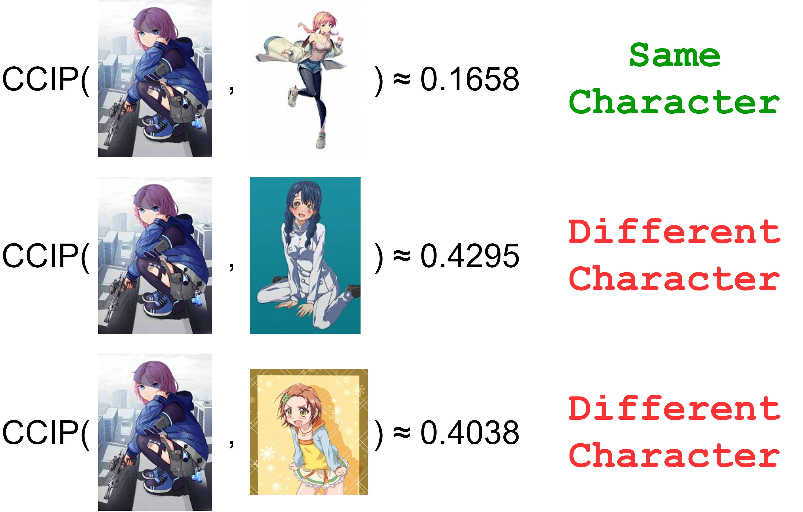
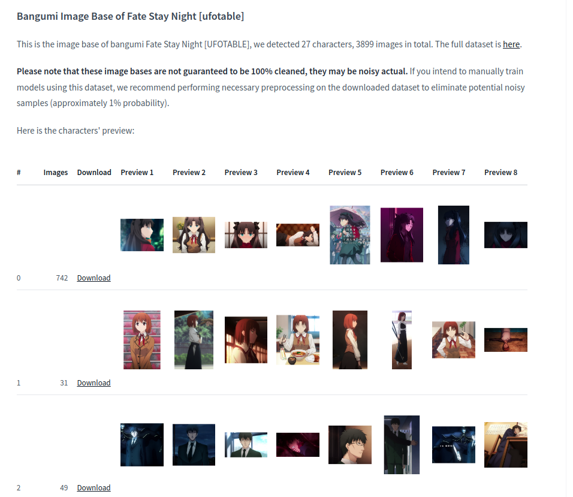
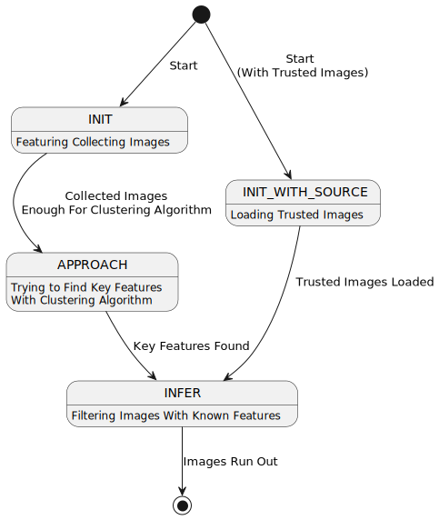

What is CCIP, and What are its Features?
Given that CCIPAction is an important operation in waifuc and plays a crucial role in cleaning up character
training datasets, many waifuc users are interested in it. Therefore, we believe it’s necessary to have a section
to introduce CCIP and CCIPAction.
What is CCIP
CCIP, short for Contrastive Character Image Pretraining, is a contrastive learning model designed for character feature extracting. Its inspiration and name are derived from CLIP, and like CLIP, it falls under the category of contrastive learning models. However, while CLIP aligns images and text, CCIP aligns images of anime characters. The concept and requirements for CCIP were initially proposed by narugo1992, and the technical roadmap and solution were designed and implemented by 7eu7d7, with narugo1992 completing the data collection. 7eu7d7 provided the computational resources for training and version iteration of CCIP.
The CCIP model consists of two parts:
Feature Extractor, used to extract feature vectors from character images.
Feature Comparator, used for similarity calculations on the extracted feature vectors.
The currently widely used CCIP model was trained using the v1_pruned version of the dataset
from Huggingface - deepghs/character_similarity,
which contains approximately 240,000 images from 3,982 different characters.
CCIP has shown promising results through extensive usage and testing.
Known Uses and Limitations of CCIP
Character Similarity Determination
The core feature of CCIP is to take two individual images as input, extract their features, and output a visual dissimilarity value between the characters in the two images. When this dissimilarity value falls below a specific threshold, it can be considered that the characters in the two images are the same.
In simple terms, CCIP allows a computer program to answer the question: “Are these two individual images of the same character?” This was previously considered a task that only humans could perform.
The image below visually demonstrates CCIP’s capabilities (you can also try it yourself using the online demo):
Character Dataset Filtering
Clearly, CCIP is essential for cleaning up irrelevant characters in web data. Anyone who has grabed images from Danbooru should be familiar with the experience that web data always contains a lot of noise, and in most cases, it cannot be effectively removed using tags. However, CCIP addresses this problem, achieving a level of dataset purity that is almost comparable to manually selecting images. With the support of the waifuc framework, users can easily obtain datasets containing thousands or even tens of thousands of high-quality images. This enables LoRAs trained on such datasets to perform at a level previously unattainable by LoRAs trained on a few dozen images.
The task of cleaning the dataset is performed by CCIPAction, which will be detailed
in the How CCIPAction Works sections.
Sorting Anime Character Images
Based on CCIP’s ability to extract and compare character features, it’s possible to use OPTICS clustering algorithm by treating character feature vectors as samples and the feature comparator as the distance metric. This allows for automatic classification of images into different character categories.
This practice has already been successful, with examples including:
DeepGHS’s BangumiBase, which contains character image sorting for hundreds of anime series.
This is a repository for the famous anime, Fate Stay Night (Ufotable version).
cybermeow’s Semi-Automatic Anime Screenshot Sorting Pipeline. Unlike our pipeline, their dataset retains both single character images and complete multi-character images, and for multi-character images, they also use CCIP to accurately label the characters. This is cybermeow’s civitai account, and models trained on data processed by such pipelines have received widespread praise.
Quality Assessment of Character LoRA Training
Currently, CCIP has shown reliable performance in many use cases, including the evaluation of the quality of images generated by character LoRAs. The specific operation involves generating images using a character model, calculating CCIP dissimilarity values between the generated images and images from the dataset, and then determining the proportion of samples with dissimilarity values below a certain threshold. This metric is called the Recognition Score or RecScore, as shown in the image below:

In simple terms, the higher the RecScore, the more likely the generated images are to be recognized as the same character as images in the dataset, indicating a higher level of character fidelity.
CCIP’s ability in this regard has also been demonstrated in the automatic LoRA training pipeline of the DeepGHS team. It can be said that CCIP has played a significant role in achieving the capabilities of LoRAs produced by the v1.4 pipeline.
Limitations of CCIP
However, CCIP is not a silver bullet, as it does not memorize specific character information. It only extracts common features from images. This means that when you provide an image to CCIP, it cannot tell you the specific name of the character. CCIP is a 0-shot classification model, which is fundamentally different from traditional taggers (taggers are classification models).
CCIP’s training accuracy is still not high enough, and its limitations include:
Strong capturing ability for character hairstyles but less sensitivity to other factors such as skin color and hair color.
While it has decent accuracy when comparing two images for the same character, it still requires more images to compensate for this limitation.
When creating a 0-shot classification problem, its ability to determine “not belonging to any existing character” is insufficient, and it tends to force a choice of the most similar category as the result.
Regarding the second limitation, we are continuously working to improve CCIP and are exploring ways to obtain better training datasets. We welcome anyone with access to higher-quality datasets to contact us.
How CCIPAction Works
CCIPAction is one of the flagship features of waifuc, capable of filtering out characters that are
not relevant to the user. To solve the problem of filtering out irrelevant characters in web datasets,
you need to address another problem first: how do you know if a character is the one the user wants?
This is not as simple as it may seem because for noisy data, you cannot easily determine a character’s
core features by averaging the first few characters. To address this problem, CCIPAction
employs a state machine with four states:
Initialization Phase (INIT): Entered when no trusted images are used (trusted images are images that can be confirmed as characters the user wants). In this state,
CCIPActiondoes not have much known information. It will extract features from input images one by one and store them without output. When the stored images reach a certain quantity (which can be set by the user), the state transitions to the Stepping Phase.Initialization with Trusted Source Phase (INIT_WITH_SOURCE): Entered when trusted images are provided for initialization. In this state, features of the provided trusted images are extracted and recorded. When all trusted images are recorded, the state transitions to the Inference Phase.
Stepping Phase (APPROACH): At this point,
CCIPActionhas some character feature vectors and tries to use these features for clustering operations. If one category in the clustering results dominates (e.g., 70%, a value that can be set by the user), it’s considered that key features have been identified. All items belonging to this category are output at once, and the state transitions to the Inference Phase. If this is not successful, it will continue to read and store new images and attempt clustering at intervals until successful.Inference Phase (INFER): In this phase, the key character features to be filtered in the data source have been determined. The filtering is performed using this set of features. For images that pass the filter, their features are recorded in the key feature set and used for subsequent filtering. Therefore, as
CCIPActionfilters more images, its accuracy in determining the characters increases.
The state diagram is shown below:
This state diagram illustrates the flow of CCIPAction based on different phases.
It’s worth noting that while CCIPAction is highly effective in real-world web data sources,
it’s not infallible. It relies on a fundamental property of anime character web data sources:
when you use tags to filter, the expected character should make up the majority and be evenly distributed.
In practice:
When 80% of the data source consists of character A and 20% of various other characters, randomly distributed throughout the source,
CCIPActionworks well.When 50% of the data source consists of character A and 50% of the same character B, randomly distributed, it might be challenging for
CCIPActionto find key character features in the APPROACH phase and may get stuck without any images being output.When 80% of the data source consists of character A and 20% of character B, but character B is highly concentrated at the beginning of the data source,
CCIPActionmay mistakenly treat character B’s features as key character features and enter the inference phase, filtering out all images of character A.
In typical web data sources, the 3rd scenario is very unlikely to occur.
The second scenario has some probability of occurring
(e.g., with the sexy wolf🐺 babe Texas in Arknights and her waifus like Exusiai👼, Lappland🐺, and Sora🐇.
It’s my honor to share so many waifus with my cool wolf waifu❤️),
but it’s still rare to have such a high proportion of two characters bound together in data source.
CCIPAction is well-equipped to handle such scenarios. Therefore, CCIPAction performs quite well
in real-world web data sources. Based on tests conducted within the team,
even when up to 40% of random characters are mixed into the data source, CCIPAction can
still work properly and successfully filter out the expected characters without significant loss.
However, the above-mentioned issues should still be noted, especially when attempting to
build complex data sources through concatenation and parallelization, as misconfigurations
in prior data sources can have catastrophic consequences.